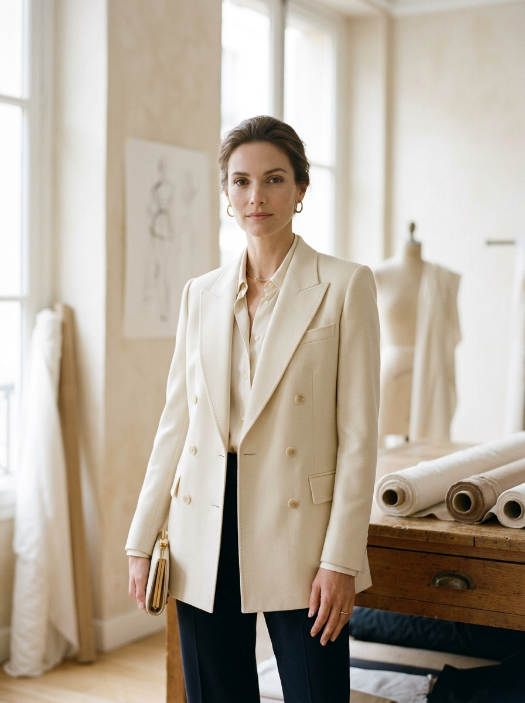
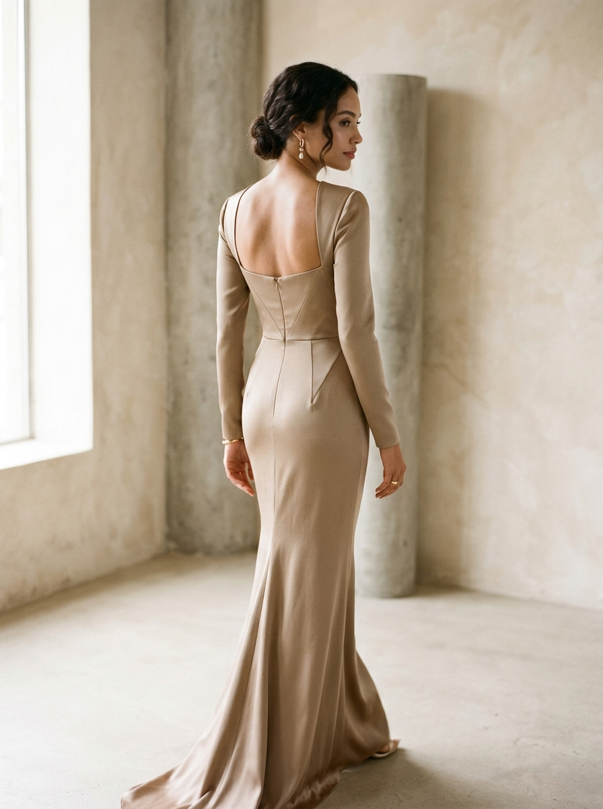
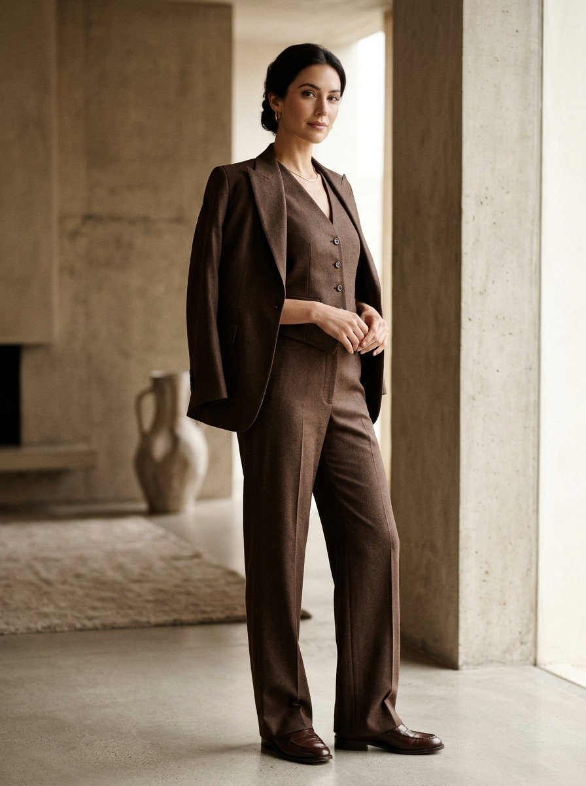
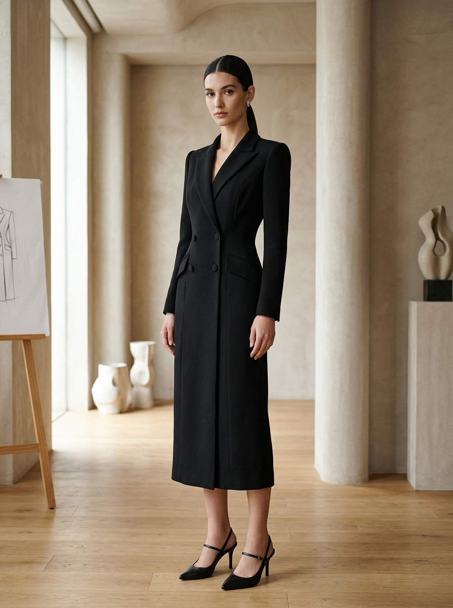
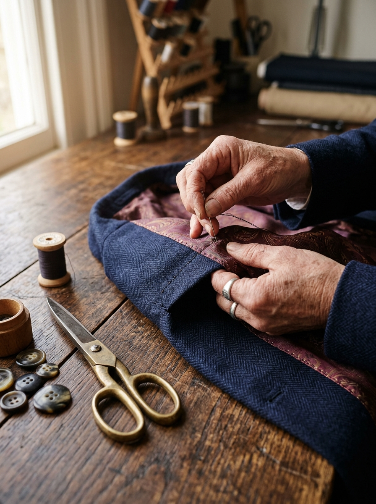
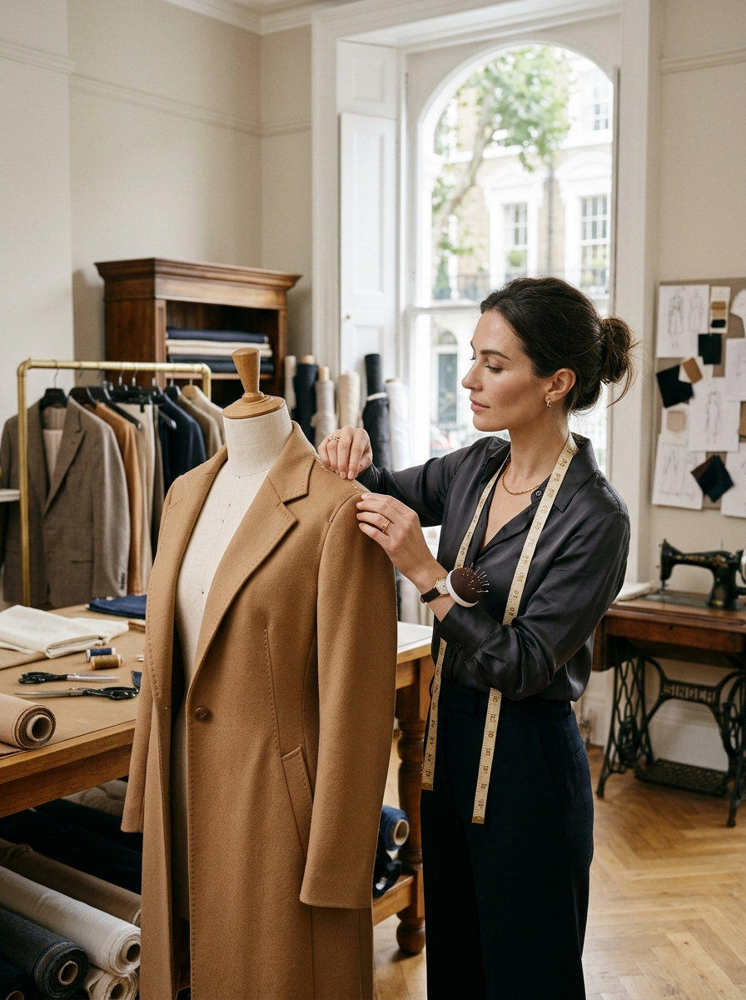
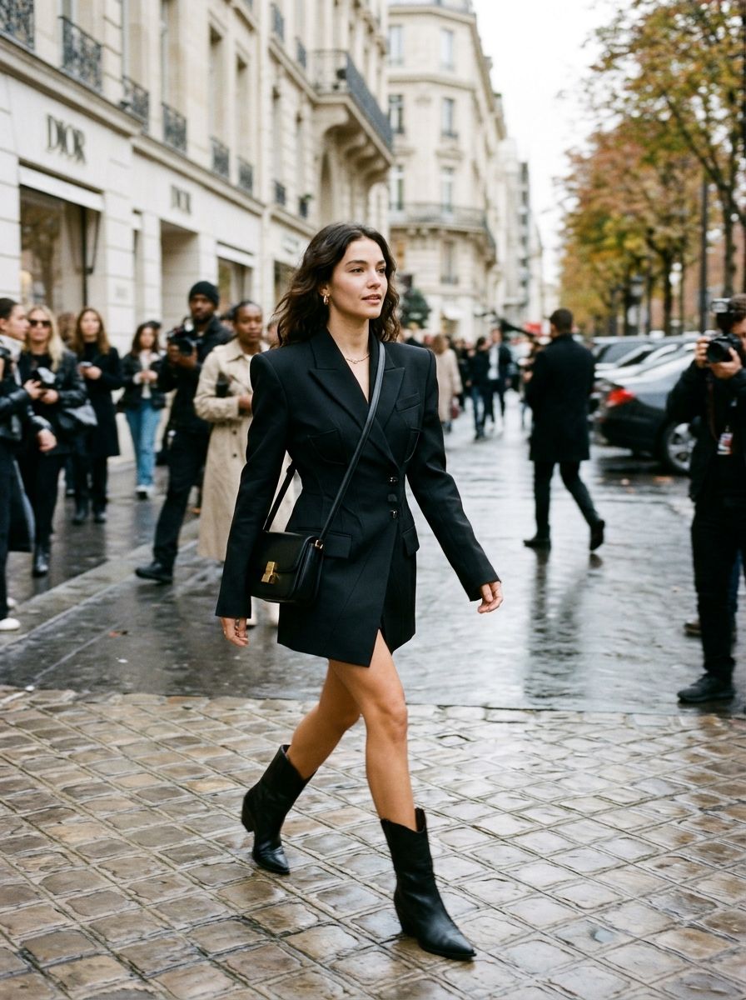

01
Primeiro Passo
Você Envia a Referência
Envie a foto do vestido, conjunto ou look que despertou seu interesse. Pode ser uma imagem salva no celular, Pinterest ou Instagram.
Encontrou aquele look perfeito em uma foto? Envie sua referência. Vamos conversar sobre o modelo, escolher os detalhes e criar uma peça personalizada para suas medidas, seu estilo e a ocasião que você deseja viver.
Converse diretamente com a especialista pelo WhatsApp.
“A sua referência transformada em uma peça feita para o seu corpo.”
“Seu estilo não precisa ficar limitado ao que está pronto nas araras.”
Talvez tenha sido aquele vestido usado por uma mulher que você admira. Uma peça que apareceu no Instagram, no Pinterest ou em uma ocasião especial e ficou guardada na sua galeria.
Você imagina como ficaria em você e começa a procurar algo parecido no varejo. Mas a modelagem não é a mesma, o tecido não convence ou o caimento não corresponde ao que você imaginou.
Existe outro caminho: levar sua inspiração para quem pode desenvolver uma peça personalizada com você, com respeito à sua silhueta, ao tecido ideal e ao seu conforto real.
Um processo transparente e acolhedor em 4 etapas — do primeiro envio da foto até a entrega da criação adaptada ao seu corpo.
Envie a foto do vestido, conjunto ou look que despertou seu interesse. Pode ser uma imagem salva no celular, Pinterest ou Instagram.
Analisamos o modelo, a ocasião, os detalhes que você mais gosta, a viabilidade técnica e as possibilidades de personalização.
Alinhamos suas medidas, as opções de tecido, a modelagem e os detalhes necessários para desenvolver sua peça com elegância e caimento.
A criação é desenvolvida de acordo com o que foi combinado, buscando um caimento cuidadoso e uma experiência personalizada para você.
Uma seleção de possibilidades para inspirar sua próxima peça personalizada. Veja estilos e referências que podem ser adaptados para a sua silhueta.
Ombros com estrutura sutil, lapela alongada e acabamento primoroso. Adaptável a diferentes biotipos e tecidos nobres.
Conversar sobre este estilo
Linhas puras com decote geométrico nas costas. Ideal para casamentos, formaturas e celebrações exclusivas.
Conversar sobre este estilo
Pantalona com caimento amplo e colete sob medida. Sofisticação atemporal com máximo conforto ao sentar e caminhar.
Conversar sobre este estilo
Uma peça híbrida marcante que une o rigor da alfaiataria clássica à feminilidade de um vestido moderno.
Conversar sobre este estilo
O verdadeiro luxo mora no interior da roupa: forros embutidos, acabamentos sem fios soltos e toque aveludado.
Conversar sobre este estilo
Ajuste fino de proporções no manequim para antecipar o caimento perfeito antes mesmo do corte definitivo.
Conversar sobre este estiloQuando você veste uma peça feita exclusivamente para você, tudo muda: a postura, a sensação de segurança e a liberdade de usar o que realmente expressa sua personalidade.
Uma peça desenvolvida a partir da referência escolhida e das suas preferências individuais.
Uma proposta pensada para as suas medidas reais, com foco em um caimento adequado ao seu biotipo.
Converse sobre tecido, acabamento e elementos que fazem sentido para o resultado e ocasião desejados.
Você pode tirar dúvidas e alinhar suas expectativas diretamente com a especialista, sem intermediários.
“Cuidamos de cada ponto para que a roupa pertença à sua história.”
“Meu trabalho começa quando você me mostra uma peça que ama.”
A partir dessa inspiração, conversamos sobre os detalhes, as possibilidades e o que faz sentido para você. Cada escolha é importante para transformar uma referência em uma criação personalizada.
Acredito que vestir-se bem também significa encontrar peças que conversem com seu estilo e com a forma como você deseja se sentir: elegante, confortável e segura de sua presença.
Acompanhe como uma imagem de referência enviada pela cliente é interpretada com rigor técnico e transformada em uma peça ajustada ao corpo.

Um look visto em celebridade, passarela ou Pinterest que inspirou a silhueta, lapela e proposta do modelo.
Modelagem adaptada às medidas individuais, tecido nobre selecionado e acabamento artesanal interno.
Avaliamos caimento, peso do tecido e sustentação estrutural antes do corte.
Ajustamos o comprimento e as proporções ao biotipo de quem vai vestir.
Forros embutidos e pontos manuais que garantem conforto e longevidade.
* Cada peça é uma criação personalizada inspirada na referência enviada, respeitando a anatomia da cliente e a disponibilidade dos melhores materiais do mercado.
Transparência do início ao fim para você se sentir segura em cada etapa da confecção.
Não. Você pode começar simplesmente enviando a foto. A especialista orientará a conversa sobre as possibilidades de tecido, caimento e construção da peça que melhor atendem ao modelo desejado.
Sim. A fotografia pode servir como referência inicial para entendermos o estilo, o corte e a proposta. A viabilidade do modelo, os materiais e os detalhes serão avaliados individualmente na nossa conversa.
A referência orienta o processo, mas o resultado depende da modelagem, dos materiais disponíveis, da construção da peça e dos ajustes combinados. O objetivo é desenvolver uma versão personalizada inspirada no modelo escolhido, perfeitamente adaptada ao seu corpo.
A especialista explicará com clareza como obter ou fornecer as medidas necessárias para o modelo e o atendimento — seja presencialmente com hora marcada ou através de orientações práticas e precisas à distância.
O valor depende do modelo, dos materiais escolhidos, da complexidade do corte e dos detalhes solicitados. Envie sua referência pelo WhatsApp para conversar sobre as possibilidades e receber um orçamento personalizado.
O prazo será informado após a avaliação do modelo e o alinhamento da agenda da profissional. Se você tem uma data específica para um evento ou ocasião especial, informe logo no primeiro contato para avaliarmos a disponibilidade.
Escolha a referência, envie para a especialista e descubra as possibilidades de criar uma peça personalizada para você.